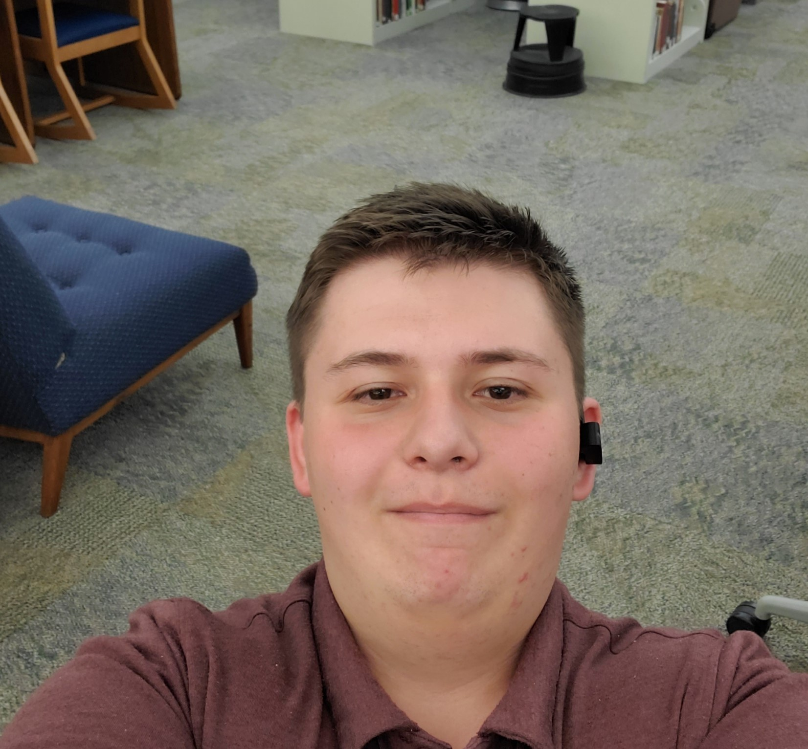

Trevor Bolles
Hello! I am Trevor Bolles I am a current student at Brigham Young University-Idaho studying to become a software engineer. I have spent most of my time working on backend development as well as learning general programming principles. I am very Excited moving into front end as I like to create tangible results when I code that I havent really gotten to see that with backend development.
When I am not coding I like to do a lot of different things from watching shows with friends to going on backpacking trips with my family. I am also a faithful member of the Church of Jesus Christ of Latter-day Saints and have been my entire life. over the course of my studies a quote that I really love comes from Joseph Smith when talkinga about receiving revelation or answers to our prayers. He Says “A person may profit by noticing the first intimation of the spirit of revelation; for instance, when you feel pure intelligence flowing into you, it may give you sudden strokes of ideas..."